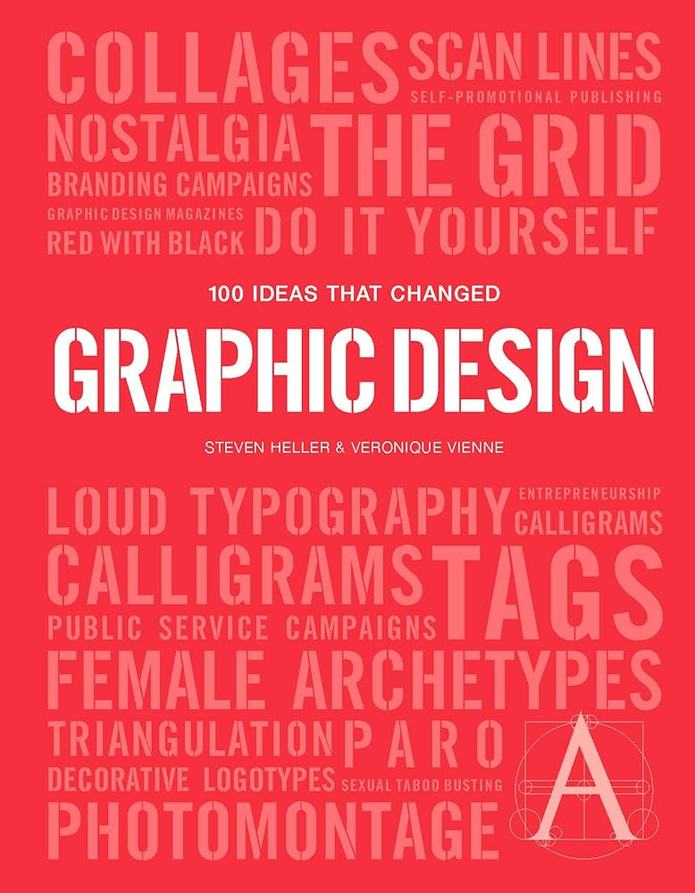

100 Ideas That Changed Graphic Design
100 Ideas that Changed Graphic Design by Steven Heller and Véronique Vienne (2012) explores the most influential, revolutionary concepts that shaped visual communication over the last century. Arranged chronologically, the book covers technical, stylistic, and philosophical shifts—from 19th-century methods to digital, including white space, punk, and pixelation. It highlights how these ideas, such as "First Things First" and Found Typography, redefined design's role.